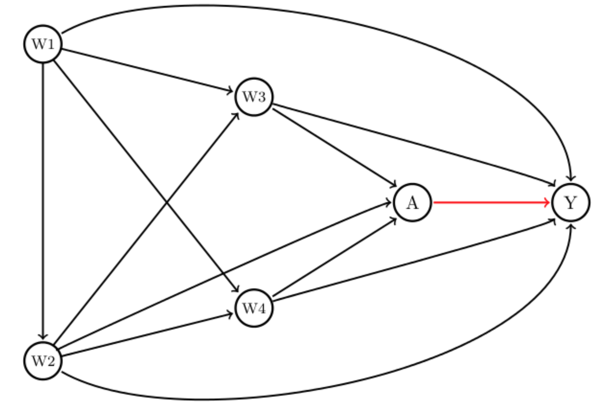
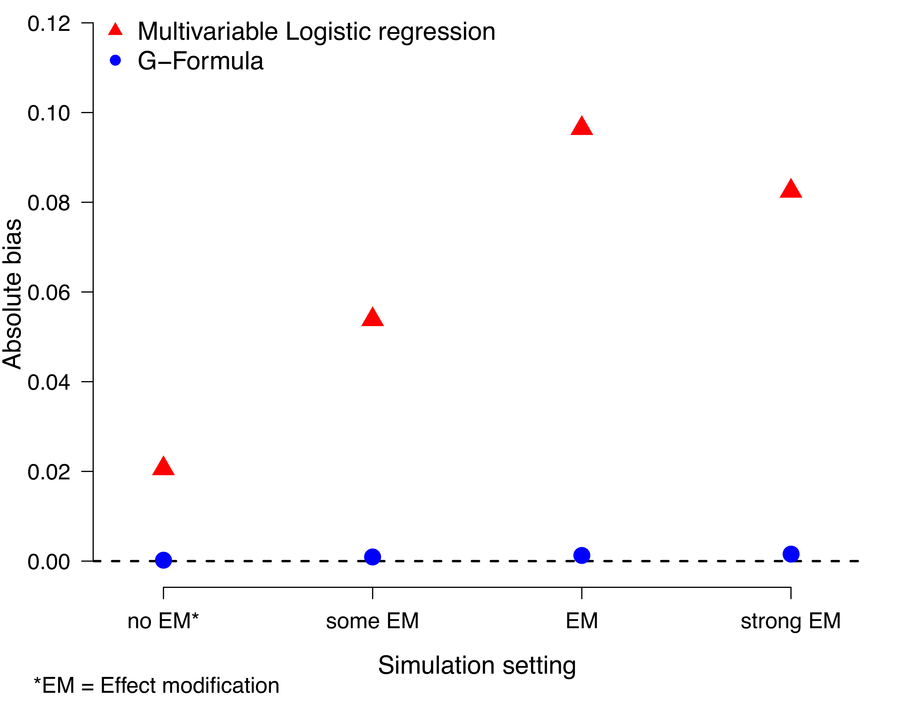

3 G-formula
3.1 Introduction
The g-formula, also known as the g-computation formula, is a fundamental method in causal inference used to estimate the causal effect of interventions using observational data. It was introduced by James Robins in the 1980s to address challenges posed by time-dependent confounding in longitudinal studies. Traditional epidemiological methods, such as regression models and stratification-based approaches, often failed to account for time-varying confounders affected by prior treatment, leading to biased estimates. The g-formula emerged as a solution to these limitations, offering a mathematically rigorous way to estimate causal effects under specific assumptions.
Before the g-formula, causal inference heavily relied on approaches such as stratification and regression, which struggled with complex confounding structures, particularly in longitudinal studies where confounders change over time. In response, Robins built upon the potential outcomes framework, originally developed by Donald Rubin and Jerzy Neyman, to introduce the g-methods. These methods include the g-formula, Inverse Probability of Treatment Weighting (IPTW), and G-estimation for Structural Nested Models, all of which aim to handle time-dependent confounding. The introduction of the g-formula represented a significant advancement by enabling researchers to estimate counterfactual outcomes more accurately.
The g-formula gained attention in the 1990s as researchers applied it to public health and epidemiology, particularly in studying long-term interventions such as HIV treatment and smoking cessation programs. As computational power increased in the 2000s, the method became more widely used in complex, high-dimensional datasets. During this period, software implementations in statistical programming languages such as R and Stata made the g-formula more accessible to applied researchers. By the 2010s, further extensions of the method allowed for the consideration of competing risks, dynamic treatment regimes, and personalized medicine applications.
Mathematically, the g-formula estimates the counterfactual mean outcome under a given intervention by standardizing observed data. It is expressed as: \[ E[Y^a] = \sum_{w} E[Y \mid A = a, W = w] P(W = w) \] In this formula, \(Y^{a}\)represents the potential outcome under the intervention\(A = a\), \(\textbf{W}\)denotes confounders (which may be time-dependent), and\(A\) refers to the treatment or exposure of interest. By iteratively predicting the outcome based on observed covariates, the g-formula helps to adjust for confounding and provides an unbiased estimate of the causal effect under the assumption of no unmeasured confounding, positivity, and consistency.
The g-formula has found applications across multiple disciplines, including epidemiology, public health, and health policy. Researchers have used it to evaluate the long-term effects of healthcare interventions, assess drug effectiveness, and inform clinical decision-making. Despite its wide applicability, the g-formula has some limitations. It requires correct model specification for all variables involved in the causal pathway, making it sensitive to model misspecification. Additionally, the method can be computationally intensive, particularly in large datasets, and relies on the assumption of no unmeasured confounding, which may not always hold in observational studies.
In recent years, modern advancements have extended the g-formula’s capabilities. Approaches such as Monte Carlo G-computation allow for the simulation of potential outcomes under various interventions, while the integration of machine learning methods helps to relax parametric assumptions and improve predictive accuracy. Furthermore, combining the g-formula with approaches like Targeted Maximum Likelihood Estimation (TMLE) has enabled more efficient and robust causal effect estimation.
Overall, the g-formula represents a major milestone in the evolution of causal inference, providing researchers with a powerful tool to estimate causal effects in complex observational settings. Its continued development and integration with modern statistical techniques ensure that it remains relevant in tackling pressing questions in public health and medicine.
3.2 Contrast between conditional and marginal estimates
3.3 Effect modification, collapsibility
(HETMOR content)
The American Journal of Public Health’s series, “Evaluating Public Health Interventions,” provides highly practical advice for public health researchers. Part eight of this series offers a strong introduction to estimating the effects of time-invariant public health interventions. The authors of this particular article propose that modern causal inference methods offer no inherent advantage over traditional multivariable regression modeling when considering bias and efficiency.
However, this assertion doesn’t always hold true. Specifically, the concepts of effect modification and collapsibility play crucial roles in determining the appropriateness of using regression for estimating causal effects. Understanding these concepts is essential for validating the use of regression in such analyses.
Cancer epidemiology example
To discuss these concepts, we are looking at an example from cancer epidemiology. In this example, we are interested in the effect of dual treatment therapy (radio- and chemotherapy), compared to single therapy (chemotherapy only) on the probability of one-year survival among colorectal cancer patients. We know that there are confounders which affect both treatment assignment and the outcome, namely clinical stage, socioeconomic status, comorbidities, and age. Evidence shows that older patients with comorbidities have a lower probability of being offered more aggressive treatments and therefore they usually get less effective curative options. Also, colorectal cancer patients from lower socioeconomic status have a higher probability of presenting an advanced clinical stage at diagnosis, thus they usually get offered only palliative treatments.
Our structural assumptions in the cancer epidemiology example
The assumptions from above can be encoded in a directed acyclic graph (DAG) (Figure 1). Here, each circle represents a variable and an arrow from A to B (A -> B) means that we assume that A causes B. The combination of these structural assumptions and appropriate statistical methods allow us to estimate the causal effect of dual therapy versus monotherapy on colorectal cancer patients’ survival.

A clinician may be interested in the following question: how different would the risk of death have been had everyone received dual therapy compared to if everyone had experienced monotherapy? The causal marginal odds ratio (MOR) answers this question. Statisticians call this a “target quantity”. Each individual has a pair of potential outcomes: the outcome they would have received had they been exposed to dual treatment (A=1), denoted Y(1), and the outcome had they been unexposed, Y(0). The MOR is defined as: \[ MOR = \frac{ \frac{P(Y(1)=1)}{(1-P(Y(1)=1))} } { \frac{P(Y(0)=1)}{(1-P(Y(0)=1))} } \] A common approach would be to use logistic regression to model the odds of mortality given the intervention, and adjust for the confounders (W) which are age (W1), socioeconomic status (W2), clinical stage (W3), and comorbidities (W4). Note that using a logistic regression, it estimates the conditional odds ratio (COR), which is: \[ COR = \frac{ \frac{P(Y=1|A=1,W)}{(1-P(Y=1|A=1,W))} } { \frac{P(Y=1|A=0,W)}{(1-P(Y=1|A=0,W))} } \] MOR and COR are typically not identical. First, if there is effect modification, e.g. if the effect of dual therapy is different for patients with no comorbidities compared to those having hypertension, then logistic regression (possibly including an interaction of treatment with one of the confounders) will not provide a marginal effect estimate, but only the conditional effect of the respective comorbidity (hypertension). To be more precise: we obtain an odds ratio that is valid for a given group of people, say those with hypertension, but it will not give us a marginal estimate. However, we are interested in a marginal estimate because we want to know if the dual therapy works in general. Of course, one may be specifically interested in patients with hypertension, but then the OR for this group is again conditional on the other variables, for example for elderly people, from a low socioeconomic level, and advanced stage.
Second, the odds ratio is non-collapsible which means that the MOR is not necessarily equal to the stratum-specific odds ratio (OR), i.e. the COR. This statement holds even when W is only related to the outcome, and not the intervention, and is thus not a confounder.[2,3] In fact, it is even possible that the conditional odds ratio shows a benefit of the intervention in every stratum, but no benefit overall, i.e. marginally. This case is known as Simpson’s paradox. We encourage the reader to read the below references 2 and 3 plus Judea Pearls’ new book, The Book of Why for more insights. Please note that while the odds ratio is non-collapsible, other measures of association like the risk-difference and the risk ratios are collapsible.
Multivariable regression versus the G-Formula
To identify the MOR, classical epidemiologic methods, such as standard multivariable logistic regression models, where the treatment is included as a covariate in the analysis, require the assumption that the effect measure of the treatment of interest is constant across the levels of confounders included in the model.[4] However, in observational studies evaluating the effect of public health interventions, this is often not the case (i.e. the effect of the intervention might differ across individuals with different susceptibilities or characteristics). This is essentially the first point we made in the paragraph above. The second point says that certain effect measures, like the odds ratio, suffer from non-collapsibility.
Thus, in summary, as pointed out by Spiegelman et al [1] it can a be an option to use regression models to adjust for confounding; but we need to assume no effect modification and we need to choose a measure that is collapsible, like the risk difference, rather than the OR.
An alternative to using multivariable regression adjustment is the G-Formula [5] (a generalization of standardization with respect to the confounder distribution). In 1986, a seminal paper [5] demonstrated that under assumptions (conditional exchangeability, positivity, consistency, and non-interference, see Appendix below), a consistent estimate of the MOR can be obtained using the G-formula. G-computation,[6] based on the estimation of the components in the G-formula, allows for a treatment effect that may vary across the levels of the confounders. Furthermore, under the assumption that the DAG above (Figure 1) is correct and the other assumptions, we can estimate the MOR using the G-formula as follows: \[ MOR (G-formula) = \frac{ \frac{\Sigma_{w} P(Y=1|A=1,W=w)P(W=w)}{(1-\Sigma_{w} P(Y=1|A=1,W=w)P(W=w))} }{ \frac{\Sigma_{w} P(Y=1|A=0,W=w)P(W=w)}{(1 - \Sigma_{w} P(Y=1|A=0,W=w)P(W=w))} } \] where P(W=w) refers to the marginal probability of W.
Monte-Carlo simulation
We implement a Monte Carlo simulation based on the above population-based cancer epidemiology scenario and provide the R code for replication in this GitHub repository: https://github.com/migariane/HETMOR-Causal-Inference/blob/master/MonteCarloSimulation.r. As noted above, we are interested in how different the odds of death would have been had everyone received dual therapy compared to if everyone had experienced monotherapy. This is a relevant research question that, answered at a population level, may have an important public health implications for cancer patients.
Data generating process
We used the R-package simcausal [7] to generate data according to the DAG introduced above. The data are (W= (W1, W2, W3, W4), A, Y) where W1 refers to age, W2 to socioeconomic status, W3 to comorbidities, and W4 to cancer stage. The detailed setup can be found here (R script for simulation). In the outcome model, we included an interaction term between treatment A and both comorbidities (W2) and cancer stage (W4), based on the plausible biological mechanism that there is an increased risk of comorbidities among older adults and a different treatment effect for those patients with and without comorbidities and advanced cancer stage. The simulation is based on a sample size of 5,000, and 10,000 simulation runs. We estimate the bias with respect to the MOR. Figure 2 shows the results of the above described Monte Carlo simulation.

Briefly, one can see the bias of the multivariable logistic regression model is more pronounced under effect modification but persists - due to non-collapsibility - even under no effect modification.
In order to be able to consistently estimate the MOR, the data must satisfy the following assumptions [8]: i) Cancer treatment is independent of the potential mortality outcomes (Y(0), Y(1)) after conditioning on W. This assumption is often referred to as “conditional exchangeability” and one cannot test it using the observed data. It implies that (within the strata of W) the mortality risk under the potential treatment A=1, i.e. P(Y(1)=1|A=1,W) equals the one under treatment A=0, i.e. P(Y(1)=1|A=0,W). In other words: the risk of death for those treated would have been the same as for those untreated if untreated subjects had received, contrary to the fact, the treatment. This assumption requires that all confounders have been measured. ii) We also assume that within strata of W every patient had a nonzero probability of receiving either of the two treatment conditions, i.e. 0 <P(A=1|W)<1 (positivity). iii) We assume consistency, which states that the counterfactuals equal the observed data under assignment to the treatment actually taken, i.e. for any individual, Y = AY(1) + (1 - A)Y(0). Also, iv) in defining an individual’s counterfactual outcome as only a function of their own treatment, we assume non-interference, meaning that the counterfactual outcome of one subject was not influenced by the treatment of any other. If our estimate of the MOR is x (>1) then we can give, for example, an interpretation that says that the chances of one year mortality are x times higher if everyone had received dual treatment compared to if everyone had received single therapy.
In the previous section, we showed that causal estimates provide a generalization of indirect standardisation via the g-computation. In this chapter, we show how to obtain estimates using the g-formula. “Classical” methods are those based on the g-formula using regression methods and inverse probability weights in contrast to more advanced methods such as double-robust that were developed to overcome the issues with the previous methods.
3.4 Non-parametric g-formula
Regression adjustment is one of the classical methods to control for confounding. As mentioned before, regression models require certain assumptions to obtain the correct model specification. One of these is that the effect of the exposure is constant across levels of a confounder. In other words, we assume there is no effect modification.(Luque-Fernandez et al., 2019)
The non-parametric g-formula, also known as g-computation, is a method for estimating causal effects by standardizing the outcome distribution over the distribution of confounders. Unlike parametric approaches, it does not impose functional form assumptions on relationships between variables. Instead, it relies on empirical estimates of conditional probabilities. This makes it a flexible approach that can be used in various observational study settings where confounding is a concern. By weighting the treatment-specific outcome probabilities by the distribution of confounders in the overall population, the non-parametric g-formula provides an estimate of the marginal treatment effect.(Robins, 1986)
3.4.1 Non-parametric g-formula for one confounder
For a binary treatment \(A\)and a binary outcome\(Y\), given a confounder \(W\), the non-parametric g-formula for the average treatment effect (ATE) is expressed as: \[ ATE = \sum_{w} \left[ E(Y \mid A = 1, W = w) - E(Y \mid A = 0, W = w) \right] P(W = w). \] where \[ E(Y = 1 \mid A = a, \textbf{W} = w) = \frac{P(\textbf{W} = w, A = a, Y = 1)}{\sum_{y} P(\textbf{W} = w, A = a, Y = y)} \] is the conditional probability of the outcome \(Y = 1\), given the treatment \(A = a\), and the set of confounders = w.
More generally, for a vector of confounders \(W\), this can be written as: \[ E[Y^a] = \sum_{w} E[Y \mid A = a, W = w] P(W = w), \] and the ATE is defined as: \[ ATE = E[Y^1] - E[Y^0]. \] The g-formula can also be used to estimate the average treatment effect among the treated (ATT) and among the untreated (ATU) by standardizing over different distributions of \(W\): \[ ATT = \sum_{w} \left[ E(Y \mid A = 1, W = w) - E(Y \mid A = 0, W = w) \right] P(W = w \mid A = 1), \] \[ ATU = \sum_{w} \left[ E(Y \mid A = 1, W = w) - E(Y \mid A = 0, W = w) \right] P(W = w \mid A = 0). \] These quantities correspond to different policy questions. While the ATE estimates the effect of treatment if everyone were treated versus if no one were treated, the ATT and ATU estimate effects in subgroups based on actual treatment assignment.
Box 3.1 (R): Bootstrap inference for multivariate G-computation
library(dplyr)
set.seed(123)
data <- data.frame(
A = rbinom(1000, 1, 0.5),
W = rbinom(1000, 1, 0.5),
Y = rbinom(1000, 1, 0.5)
)
cond_probs <- data %>%
group_by(A, W) %>%
summarise(P_Y = mean(Y), .groups = 'drop')
p_W <- data %>%
group_by(W) %>%
summarise(P_W = n() / nrow(data), .groups = 'drop')
p_W1 <- data %>%
filter(A == 1) %>%
group_by(W) %>%
summarise(P_W1 = n() / n(), .groups = 'drop')
p_W0 <- data %>%
filter(A == 0) %>%
group_by(W) %>%
summarise(P_W0 = n() / n(), .groups = 'drop')
ate <- sum((cond_probs$P_Y[cond_probs$A == 1] -
cond_probs$P_Y[cond_probs$A == 0]) * p_W$P_W)
att <- sum((cond_probs$P_Y[cond_probs$A == 1] -
cond_probs$P_Y[cond_probs$A == 0]) * p_W1$P_W1)
atu <- sum((cond_probs$P_Y[cond_probs$A == 1] -
cond_probs$P_Y[cond_probs$A == 0]) * p_W0$P_W0)
cat("ATE:", round(ate, 3), "\n")
cat("ATT:", round(att, 3), "\n")
cat("ATU:", round(atu, 3), "\n")Box 3.11 (Stata): Bootstrap for multivariate parametric G-formula
capture program drop ATE
program define ATE, rclass
capture drop y1
capture drop y0
reg $Y $W if $A==1
predict double y1, xb
quiet sum y1
reg $Y $W if $A==0
predict double y0, xb
quiet sum y0
mean y1 y0
lincom _b[y1]-_b[y0]
return scalar ace =`r(estimate)'
end
qui bootstrap r(ace), reps(1000) seed(1): ATE dots
estat boot, all
/* 4 Inverse probability of treatment weighting */
/* 4.1 Inverse probability of treatment weighting based on the propensity score plus regression adjustment */Bootstrap procedure for statistical inference
Since the g-formula involves a multi-step estimation process–first estimating conditional means and then standardizing over a distribution of confounders–closed-form standard errors are generally not available.(Efron & Tibshirani, 1993) As such, the bootstrap is a practical alternative for estimating standard errors and constructing confidence intervals.(Efron, 1982; Efron & Tibshirani, 1993)
The bootstrap approximates the sampling distribution of an estimator by resampling the observed data with replacement and recalculating the estimator on each resampled dataset. From the distribution of the bootstrap replicates, one can compute the standard error as the sample standard deviation. Confidence intervals can be derived using different methods depending on the shape of the bootstrap distribution:
- Normal-based intervals assume approximate symmetry.
- Percentile intervals use the empirical quantiles of the bootstrap estimates.
- Bias-corrected and accelerated (BCa) intervals correct for bias and skewness.
The choice of interval depends on the observed shape of the bootstrap distribution.(Jung et al., 2019) Histograms or density plots are often used to guide this choice.
R Implementation
Box 3.2 (R): Parametric G-computation with multiple confounders
library(boot)
bootstrap_ate <- function(data, indices) {
boot_data <- data[indices, ]
cond_probs <- boot_data %>%
group_by(A, W) %>%
summarise(P_Y = mean(Y), .groups = 'drop')
p_W <- boot_data %>%
group_by(W) %>%
summarise(P_W = n() / nrow(boot_data), .groups = 'drop')
sum((cond_probs$P_Y[cond_probs$A == 1] -
cond_probs$P_Y[cond_probs$A == 0]) * p_W$P_W)
}
set.seed(123)
boot_results <- boot(data, statistic = bootstrap_ate, R = 1000)
boot.ci(boot_results, type = c("norm", "perc", "bca"))Box 3.2 (Stata): Bootstrap for Non-parametric G-Formula
capture program drop ATE
program define ATE, rclass
capture drop ATE
sumup $Y, by($A $C)
matrix y00 = r(Stat1)
matrix y01 = r(Stat2)
matrix y10 = r(Stat3)
matrix y11 = r(Stat4)
gen ATE = ((y11[3,1]-y01[3,1]))*sexm + ((y10[3,1]-y00[3,1]))*sexf
qui sum ATE
return scalar ate = `r(mean)'
end
qui bootstrap r(ate), reps(1000) seed(1): ATE // Bootstrap 1000 estimates of the ATE
estat boot, all
drop ATEThis approach provides a practical method for estimating uncertainty when using the non-parametric g-formula. The next section will introduce the parametric g-formula, which can offer computational advantages when the form of the outcome model is known or correctly specified.
3.4.2 Non-parametric G-formula for a Fully Saturated Regression Model
In practice, the conditional expectations required by the non-parametric g-formula can be estimated using regression models. When the number of confounder strata is small and all confounders are categorical, a fully saturated regression model can be used to obtain a non-parametric estimate of the conditional mean of the outcome given treatment and confounders.
A fully saturated model includes all main effects and interactions between the treatment variable and the confounders. For example, when both the treatment variable \(A\)and the confounder\(W\) are binary, a saturated logistic regression model is given by: \[ \text{logit}(P(Y = 1 \mid A, W)) = \beta_0 + \beta_1 A + \beta_2 W + \beta_3 A \cdot W. \] This model allows for effect modification by \(W\) and does not impose restrictions on the homogeneity of treatment effects across strata.
After fitting the saturated model, the predicted probabilities \(\widehat{P}(Y = 1 \mid A = a, W = w)\)for each level of\(W\)can be used to estimate\(E[Y^a]\) through standardization. The non-parametric g-formula using the fitted regression model is: \[ \widehat{E}[Y^a] = \sum_w \widehat{P}(Y = 1 \mid A = a, W = w) \cdot \widehat{P}(W = w), \] and the average treatment effect (ATE) is then: \[ \widehat{ATE} = \widehat{E}[Y^1] - \widehat{E}[Y^0]. \] This approach is fully non-parametric in the sense that it does not rely on parametric assumptions beyond estimating a separate mean for each treatment-confounder stratum. The non-parametric g-formula can also incorporate complex parameters, such as interactions. When there is only one confounder, including an interaction term between the confounder and the exposure creates a fully-saturated model.
R Implementation (Point Estimation)
Box 3.3 (R): Bootstrap for parametric G-computation with multiple confounders
set.seed(123)
data <- data.frame(
A = rbinom(1000, 1, 0.5),
W = rbinom(1000, 1, 0.5),
Y = rbinom(1000, 1, 0.5)
)
# Estimate P(W)
p_W <- data %>%
group_by(W) %>%
summarise(P_W = n() / nrow(data), .groups = 'drop')
# Fit saturated logistic regression model
saturated_model <- glm(Y ~ A * W, data = data, family = binomial)
# Create combinations of A and W
pred_data <- data.frame(
A = rep(0:1, each = 2),
W = rep(0:1, times = 2)
)
# Predict outcome probabilities
pred_data$P_Y <- predict(saturated_model, newdata = pred_data, type = "response")
# Extract predicted values
p_y1 <- pred_data$P_Y[pred_data$A == 1]
p_y0 <- pred_data$P_Y[pred_data$A == 0]
# Compute ATE
ate_saturated <- sum((p_y1 - p_y0) * p_W$P_W)
cat("ATE (saturated model):", round(ate_saturated, 3), "\n")Box 3.3 (Stata): Fully saturated regression model (method 1)
* method 1: conditional probabilities
regress $Y ibn.$A ibn.$A#$C , noconstant vce(robust) coeflegend
predictnl ATE = (_b[1.rhc] + _b[1.rhc#c.sex]*sex) - (_b[0bn.rhc] + _b[0bn.rhc#c.sex]*sex)
qui sum ATE
display "The ATE is: " `r(mean)'
drop ATE
// Bootstrap 95% CI
capture program drop ATE
program define ATE, rclass
capture drop ATE
regress $Y ibn.$A ibn.$A#c.($C) , noconstant vce(robust) coeflegend
predictnl ATE = (_b[1.rhc] + _b[1.rhc#c.sex]*sex) - (_b[0bn.rhc] + _b[0bn.rhc#c.sex]*sex)
qui sum ATE
return scalar ate = `r(mean)'
end
qui bootstrap r(ate), reps(1000) seed(1): ATE
estat boot, all
drop ATEBootstrap Inference
As with other g-formula implementations, there is no closed-form variance expression for the ATE when using a fully saturated model. The bootstrap provides a practical approach for inference by approximating the sampling distribution of the ATE estimator.
Box 3.4 (R): Bootstrap inference for parametric G-computation (one confounder)
library(boot)
# Define bootstrap function
bootstrap_saturated <- function(data, indices) {
d <- data[indices, ]
# Estimate P(W)
p_W <- d %>%
group_by(W) %>%
summarise(P_W = n() / nrow(d), .groups = 'drop')
# Fit saturated model
saturated_model <- glm(Y ~ A * W, data = d, family = binomial)
# Create prediction data
pred_data <- data.frame(
A = rep(0:1, each = 2),
W = rep(0:1, times = 2)
)
# Predict probabilities
pred_data$P_Y <- predict(saturated_model, newdata = pred_data, type = "response")
p_y1 <- pred_data$P_Y[pred_data$A == 1]
p_y0 <- pred_data$P_Y[pred_data$A == 0]
# Compute ATE
sum((p_y1 - p_y0) * p_W$P_W)
}
# Run bootstrap
set.seed(123)
boot_results_sat <- boot(data, statistic = bootstrap_saturated, R = 1000)
# Confidence intervals
boot.ci(boot_results_sat, type = c("norm", "perc", "bca"))Box 3.4 (Stata): Fully saturated regression model using margins (method 2)
* method 2: marginal probabilities
regress $Y ibn.$A ibn.$A#$C , noconstant vce(robust) coeflegend
* Marginal probability in each treatment group
margins $A , vce(unconditional)
* Difference in marginal probability between treatment groups
margins r.$A , contrast(nowald)
/* 3.2 PARAMETRIC G-FORMULA */
* One confounderThe bootstrap allows researchers to obtain standard errors and confidence intervals that reflect the uncertainty inherent in estimating the conditional expectations and the marginalization process. As with all bootstrap methods, the validity of the inference depends on a sufficiently large sample size and adequate representation of variability in the observed data.
3.4.3 Functional Delta Method for Confidence Intervals
The Delta method is a statistical approach to derive the SE of an asymptotically normally distributed estimator. It uses a first-order Taylor approximation, which is how we approximate the distribution of a function using a tangent line (i.e., the first derivative).(Oehlert, 1992) Therefore, using the Delta method here we assume that the ATE estimate from the G-computation is normally distributed.(Kennedy, 2016)
While the bootstrap is a popular and flexible approach for estimating uncertainty in causal inference, it can be computationally intensive, especially when the estimator is complex or sample sizes are large. As an alternative, the functional delta method provides an analytic approximation to the standard error and confidence interval of an estimator. It is particularly useful when the quantity of interest can be expressed as a smooth function of sample statistics, such as sample means or proportions. The delta method avoids resampling by using a Taylor series approximation to quantify how uncertainty in the inputs propagates to the final estimate.
The functional delta method is an extension of the classical delta method, which provides a way to approximate the variance of a function of an estimator. Suppose we have an estimator \(\hat{\theta}\)that converges in distribution to a normal distribution, and we are interested in a function\(g(\hat{\theta})\). If \(g(\cdot)\)is differentiable at\(\theta\), then the delta method states: \[ \sqrt{n} \left( g(\hat{\theta}) - g(\theta) \right) \overset{d}{\longrightarrow} \mathcal{N}\left(0, \left[ g'(\theta) \right]^2 \cdot \sigma^2 \right), \] where \(g'(\theta)\)is the derivative of\(g\)at\(\theta\), and \(\sigma^2\)is the asymptotic variance of\(\hat{\theta}\).
In the case of the g-formula, we are typically interested in the average treatment effect (ATE), defined as: \[ ATE = \sum_w \left[ E(Y \mid A = 1, W = w) - E(Y \mid A = 0, W = w) \right] P(W = w). \] This is a linear combination of conditional expectations \(E(Y \mid A = a, W = w)\), each of which can be estimated using sample means and weighted by the marginal distribution of \(W\). Since the ATE is a linear function of these sample means, we can apply the delta method to approximate the variance of the estimated ATE.
Let us denote: - \(\hat{\mu}_{a,w} = \hat{E}(Y \mid A = a, W = w)\): the estimated mean outcome for treatment group \(a\)and stratum\(w\) - \(\hat{p}_w = \hat{P}(W = w)\): the proportion of the sample in stratum \(w\)
The estimated ATE is: \[ \widehat{ATE} = \sum_w \left( \hat{\mu}_{1,w} - \hat{\mu}_{0,w} \right) \hat{p}_w. \] Since this is a sum of estimated means times weights, its variance can be approximated using the delta method: \[ \text{Var}(\widehat{ATE}) \approx \sum_w \hat{p}_w^2 \left[ \text{Var}(\hat{\mu}_{1,w}) + \text{Var}(\hat{\mu}_{0,w}) \right]. \] Each \(\hat{\mu}_{a,w}\) is a sample mean, and its variance can be estimated as: \[ \text{Var}(\hat{\mu}_{a,w}) \approx \frac{\hat{\sigma}^2_{a,w}}{n_{a,w}}, \] where \(\hat{\sigma}^2_{a,w}\)is the sample variance of\(Y\)among individuals with\(A = a\)and\(W = w\), and \(n_{a,w}\) is the number of such individuals in the sample.
This approximation assumes that the sample means \(\hat{\mu}_{1,w}\)and\(\hat{\mu}_{0,w}\)are approximately independent across\(w\), and that the weights \(\hat{p}_w\) are treated as fixed (i.e., not contributing to the variance).
R Implementation
Box 3.5 (R): Parametric G-computation with a single confounder
# Estimate conditional means, variances, and sample sizes
summary_stats <- data %>%
group_by(A, W) %>%
summarise(
mu = mean(Y),
var = var(Y),
n = n(),
.groups = 'drop'
)
# Separate estimates by treatment group
mu1 <- summary_stats %>% filter(A == 1) %>% arrange(W)
mu0 <- summary_stats %>% filter(A == 0) %>% arrange(W)
# Estimate P(W)
p_W <- data %>% group_by(W) %>% summarise(p = n() / nrow(data)) %>% arrange(W)
# Estimate ATE
ate_delta <- sum((mu1$mu - mu0$mu) * p_W$p)
# Estimate variance using delta method
var_ate <- sum((p_W$p^2) * ((mu1$var / mu1$n) + (mu0$var / mu0$n)))
se_ate <- sqrt(var_ate)
# Construct 95% confidence interval
ci_lower <- ate_delta - 1.96 * se_ate
ci_upper <- ate_delta + 1.96 * se_ate
cat("ATE (delta method):", round(ate_delta, 3), "\n")
cat("SE:", round(se_ate, 3), "\n")
cat("95% CI:", round(ci_lower, 3), "-", round(ci_upper, 3), "\n")Box 3.5 (Stata): Parametric G-formula by hand (one confounder)
* Calculations by hand
* Regresion model and expected probability amongst treated those with RHC
regress $Y $C if $A==1
predict double y1hat
* Regression model and expected probability amongst untreated those without RHC
regress $Y $C if $A==0
predict double y0hat
mean y1hat y0hat
* Difference between expected probabilities (ATE) and biased confidence interval
lincom _b[y1hat] - _b[y0hat]The functional delta method offers a mathematically elegant way to obtain approximate standard errors and confidence intervals, particularly when the estimand is a smooth function of averages or proportions. It provides an efficient analytic alternative to resampling-based methods, though it requires some care in variance estimation and interpretation. When the conditions for applying the delta method are met, it can be a fast and accurate tool for inference in causal effect estimation.
3.5 Parametric g-formula
In contrast to the nonparametric methods (i.e., probability distribution free or infinite dimensions), parametric methods are not affected by the curse of dimensionality.(Boos & Stefanski, 2013) However, to compute the ATE parametrically we have to assume there is a particular probability distribution that fits the distribution of our data.
3.5.1 Parametric G-formula for One Confounder
The parametric g-formula is a version of g-computation that relies on specified parametric models to estimate the conditional expectation of the outcome given treatment and confounders. Whereas the non-parametric g-formula requires estimating these expectations separately in each stratum of the confounders, the parametric version uses a model–typically regression–to summarize the outcome distribution as a function of treatment and covariates. This approach is particularly useful when the number of confounders is large, or when the confounders are continuous, making non-parametric estimation impractical due to data sparsity.
By imposing a functional form, the parametric g-formula can borrow strength across covariate strata and improve efficiency, though at the cost of potential bias if the model is misspecified. The key idea is to fit a model for the conditional expectation (E[Y A, W]), and then use it to predict the potential outcomes under each treatment level (A = a) for every individual, followed by averaging over the empirical distribution of the covariates.
Estimation Procedure
Suppose we are interested in estimating the average treatment effect (ATE) of a binary treatment (A) on a binary outcome (Y), adjusting for a single binary confounder (W). Using the parametric g-formula, we proceed in two steps:
Model the outcome: Fit a regression model, such as logistic regression, \[ \text{logit}(P(Y = 1 \mid A, W)) = \beta_0 + \beta_1 A + \beta_2 W + \beta_3 A \cdot W. \] This model allows for an interaction between treatment and confounder to capture potential effect modification.
Standardize over the population: Predict potential outcomes under \(A = 1\)and\(A = 0\)for each individual in the dataset, keeping\(W\) fixed at its observed value. Then, compute: \[ \widehat{E}[Y^1] = \frac{1}{n} \sum_{i=1}^n \hat{E}[Y_i \mid A = 1, W_i], \quad \widehat{E}[Y^0] = \frac{1}{n} \sum_{i=1}^n \hat{E}[Y_i \mid A = 0, W_i]. \] The average treatment effect (ATE) is given by: \[ \widehat{ATE} = \widehat{E}[Y^1] - \widehat{E}[Y^0]. \] This procedure estimates what would happen if, counter to fact, everyone in the sample had received treatment ((A = 1)), and separately, what would have happened if everyone had received control ((A = 0)). The difference in these averages provides an estimate of the causal effect.
R Implementation
Box 3.6 (R): Bootstrap inference for the non-parametric G-formula ATE
set.seed(123)
data <- data.frame(
A = rbinom(1000, 1, 0.5),
W = rbinom(1000, 1, 0.5),
Y = rbinom(1000, 1, 0.5)
)
# Fit parametric model
param_model <- glm(Y ~ A * W, data = data, family = binomial)
# Predict counterfactual outcomes
data1 <- data; data1$A <- 1
data0 <- data; data0$A <- 0
pred1 <- predict(param_model, newdata = data1, type = "response")
pred0 <- predict(param_model, newdata = data0, type = "response")
# Estimate ATE
ate_param <- mean(pred1 - pred0)
cat("ATE (parametric g-formula):", round(ate_param, 3), "\n")Box 3.6 (Stata): Parametric G-formula using teffects (one confounder)
teffects ra ($Y $C) ($A) // Parametric g-formula implemented in StataThis approach avoids the sparsity issues of non-parametric stratification and can handle continuous confounders or high-dimensional covariates by specifying appropriate models. However, it is crucial that the model for (E[Y A, W]) is correctly specified. Misspecification can lead to biased estimates of causal effects. For this reason, model diagnostics and robustness checks should be considered when using the parametric g-formula.
Bootstrap Inference
In the parametric g-formula, the ATE is computed by plugging model-based predictions into a functional expression. While the parametric model may provide valid point estimates, standard errors and confidence intervals derived from the model’s internal variance estimates do not account for the entire g-computation procedure, which includes both model fitting and marginalization steps. Therefore, model-based (analytic) standard errors can be misleading.
The bootstrap offers a solution by approximating the full sampling distribution of the ATE through repeated resampling. Each bootstrap replicate involves refitting the outcome model and re-estimating the ATE. The resulting distribution of ATEs captures uncertainty due to both the model fitting and the g-formula estimation process.
Box 3.7 (R): Non-parametric G-computation for the ATE
library(boot)
# Define bootstrap function for parametric g-formula
boot_parametric <- function(data, indices) {
d <- data[indices, ]
model <- glm(Y ~ A * W, data = d, family = binomial)
d1 <- d; d1$A <- 1
d0 <- d; d0$A <- 0
pred1 <- predict(model, newdata = d1, type = "response")
pred0 <- predict(model, newdata = d0, type = "response")
mean(pred1 - pred0)
}
# Run bootstrap
set.seed(123)
boot_results <- boot(data, statistic = boot_parametric, R = 1000)
# Confidence intervals
boot.ci(boot_results, type = c("norm", "perc", "bca"))Box 3.7 (Stata): Bootstrap for parametric G-formula (one confounder)
capture program drop ATE
program define ATE, rclass
capture drop y1
capture drop y0
reg $Y $C if $A==1
predict double y1, xb
quiet sum y1
reg $Y $C if $A==0
predict double y0, xb
quiet sum y0
mean y1 y0
lincom _b[y1]-_b[y0]
return scalar ace =`r(estimate)'
end
qui bootstrap r(ace), reps(1000) seed(1): ATE
estat boot, all
* More than one confounder naive approach
regress $Y $A $W
bootstrap, reps(1000) seed(1): regress $Y $A $WBootstrap confidence intervals allow for inference that reflects the entire estimation procedure, making them particularly valuable in causal inference settings where estimators are functions of several estimated components.
3.5.2 Parametric G-formula for Multiple Confounders
When more than one confounder is present, the parametric g-formula remains applicable by fitting a model that includes the treatment, all confounders, and optionally interaction terms. This generalization is essential in real-world applications, where multiple covariates are needed to control for confounding.
The process involves fitting a model for the outcome as a function of treatment and confounders, then using this model to predict potential outcomes under both treatment and control for each individual in the sample. These predictions are then averaged to estimate \(E[Y^1]\)and\(E[Y^0]\), and the difference yields the average treatment effect (ATE).
Let \(W = (W_1, W_2, \ldots, W_k)\)be a set of\(k\) confounders. A typical logistic regression model for a binary outcome might be written as: \[ \text{logit}(P(Y = 1 \mid A, W)) = \beta_0 + \beta_1 A + \sum_{j=1}^k \beta_{j+1} W_j + \sum_{j=1}^k \gamma_j A \cdot W_j. \] In this model: - \(\beta_0\) is the intercept, representing the baseline log-odds of the outcome when all predictors are zero. - \(\beta_1\)is the main effect of treatment\(A\), adjusted for confounders. - \(\beta_{j+1}\)represents the main effect of each confounder\(W_j\). - \(\gamma_j\)captures the interaction between treatment and confounder\(W_j\), allowing the treatment effect to vary across levels of the confounder (i.e., effect modification).
By including both main effects and interaction terms, the model can flexibly account for how treatment effects may differ across confounder strata.
As before, the potential outcomes are predicted under both treatment levels and averaged across the population: \[ \widehat{E}[Y^a] = \frac{1}{n} \sum_{i=1}^n \hat{E}[Y_i \mid A = a, W_i], \quad \widehat{ATE} = \widehat{E}[Y^1] - \widehat{E}[Y^0]. \] #### R Implementation (Multiple Confounders)
Box 3.8 (R): Computing ATE, ATT, and ATU from simulated data
set.seed(123)
data <- data.frame(
A = rbinom(1000, 1, 0.5),
W1 = rnorm(1000),
W2 = rbinom(1000, 1, 0.4),
W3 = sample(1:3, 1000, replace = TRUE)
)
# Generate outcome with some treatment effect and confounding
data$Y <- rbinom(1000, 1, plogis(-0.5 + 0.8 * data$A - 0.3 * data$W1 +
0.5 * data$W2 - 0.2 * (data$W3 == 2)))
# Fit logistic regression with treatment, confounders, and interactions
param_model <- glm(Y ~ A * (W1 + W2 + factor(W3)), data = data, family = binomial)
# Predict under treatment and control
data1 <- data; data1$A <- 1
data0 <- data; data0$A <- 0
pred1 <- predict(param_model, newdata = data1, type = "response")
pred0 <- predict(param_model, newdata = data0, type = "response")
# Estimate ATE
ate_multi <- mean(pred1 - pred0)
cat("ATE (multiple confounders):", round(ate_multi, 3), "\n")Box 3.8 (Stata): Parametric G-formula by hand (multiple confounders)
* Regresion model and expected probability amongst treated those with RHC
regress $Y $W if $A==1
predict double y1hat
* Regression model and expected probability amongst untreated those without RHC
regress $Y $W if $A==0
predict double y0hat
mean y1hat y0hat
* Difference between expected probabilities (ATE) and biased confidence interval
lincom _b[y1hat] - _b[y0hat]This model can include both categorical and continuous covariates and their interactions with treatment. If the number of covariates is large or the model becomes overly complex, regularization (e.g., LASSO) or machine learning methods can be used to model \(E[Y \mid A, W]\), though uncertainty estimation requires more advanced tools.
It is essential to use domain knowledge to decide which variables and interactions to include. Including unnecessary interaction terms may increase variance, while omitting important ones can introduce bias. As with simpler models, the results depend on the correctness of the model. Diagnostics such as those in Section 3.6.3 should be applied to assess model adequacy.
Bootstrap for Confidence Intervals
As with simpler cases, there is no closed-form variance for the ATE from the parametric g-formula with multiple confounders. Since the estimation involves both model fitting and standardization, model-based standard errors may not be valid. The bootstrap provides a practical solution.
The bootstrap resamples the data with replacement, refits the model in each resample, and recalculates the ATE. This gives an empirical sampling distribution of the ATE estimate. The standard deviation of the bootstrap estimates provides an estimate of the standard error, and confidence intervals can be derived using:
- Normal approximation – assumes bootstrap estimates are normally distributed.
- Percentile method – uses the 2.5% and 97.5% percentiles of the bootstrap estimates.
- Bias-corrected and accelerated (BCa) – adjusts for bias and skewness in the bootstrap distribution.
R Implementation:
Box 3.9 (R): Simulating data for ATE, ATT, and ATU estimation
library(boot)
# Define bootstrap function
boot_multi <- function(data, indices) {
d <- data[indices, ]
model <- glm(Y ~ A * (W1 + W2 + factor(W3)), data = d, family = binomial)
d1 <- d; d1$A <- 1
d0 <- d; d0$A <- 0
pred1 <- predict(model, newdata = d1, type = "response")
pred0 <- predict(model, newdata = d0, type = "response")
mean(pred1 - pred0)
}
# Run bootstrap
set.seed(123)
boot_results_multi <- boot(data, statistic = boot_multi, R = 1000)
# Display confidence intervals
boot.ci(boot_results_multi, type = c("norm", "perc", "bca"))Box 3.9 (Stata): Parametric G-formula using teffects (multiple confounders)
teffects ra ($Y $W) ($A)The bootstrap allows inference that reflects the full complexity of the g-computation procedure, making it an essential complement to the parametric g-formula when dealing with multiple confounders.
3.5.3 Model Diagnostics and Robustness Checks
Because the validity of the parametric g-formula relies on the correct specification of the outcome model \(E[Y \mid A, W]\), it is essential to assess the adequacy of the model. Several strategies can be used to evaluate model fit and robustness:
Assess model fit: Use standard regression diagnostics such as the Hosmer-Lemeshow test, plots of observed vs predicted values, and residual analyses. Check calibration across strata of \(A\)and\(W\).
Check for non-linearity and interactions: For continuous covariates, consider using splines or polynomial terms. For categorical covariates, assess whether interactions with \(A\) are needed.
Evaluate effect modification: Test whether the effect of \(A\)varies across levels of\(W\). Failing to include necessary interaction terms can bias the ATE.
Compare with non-parametric estimates: If feasible, compare the parametric g-formula estimate with the non-parametric version. Discrepancies may indicate model misspecification.
Cross-validation: Use resampling methods such as \(k\)-fold cross-validation to assess the predictive performance and generalizability of the model.
Sensitivity analysis: Explore how the estimated ATE changes under alternative model specifications, such as omitting interaction terms or using different link functions.
Conducting thorough model diagnostics strengthens confidence in the parametric g-formula and helps avoid misleading causal inferences due to model misspecification. When diagnostics suggest lack of fit, more flexible methods–such as the non-parametric g-formula or targeted maximum likelihood estimation (TMLE)–may be warranted.
3.6 Conclusion
The g-formula represents a fundamental advance in causal inference methodology. By standardizing outcome predictions across the confounder distribution, it directly estimates marginal causal effects — even in the presence of effect modification — unlike standard regression adjustment. The non-parametric g-formula (via stratification or Monte Carlo simulation) is flexible but requires rich data and sufficient sample size within strata. The parametric g-formula is more practical in moderate samples but relies on correct model specification. The delta method and bootstrap provide complementary tools for valid inference, with the bootstrap offering the advantage of avoiding restrictive distributional assumptions.
Key takeaways from this chapter: - The g-formula estimates marginal causal effects by standardizing conditional expectations across the confounder distribution. - It correctly handles effect modification by confounders — a key advantage over standard regression. - The non-parametric g-formula is asymptotically unbiased but can be inefficient in small samples or with many confounders. - The parametric g-formula is efficient but requires careful model diagnostics. - The functional delta method and bootstrap provide valid standard errors and confidence intervals. - When models are uncertain, doubly-robust methods like TMLE (Chapter 5) offer additional protection.
3.7 Glossary
- Bootstrap
- A resampling technique for estimating the sampling distribution of a statistic by repeatedly sampling with replacement from the observed data.
- Collapsibility
- A property where the conditional effect measure equals the marginal effect measure; odds ratios and hazard ratios are generally non-collapsible.
- Delta method
- A technique for approximating the variance of a function of an estimator using a first-order Taylor expansion.
- Effect modification
- When the causal effect of treatment varies across levels of a covariate; also called heterogeneity of treatment effects.
- G-formula
- A method for estimating marginal causal effects by standardizing conditional outcome expectations across the confounder distribution; also known as G-computation.
- Monte Carlo simulation
- A computational technique that uses repeated random sampling to approximate complex probability distributions or integrals.
- Double robust methods $